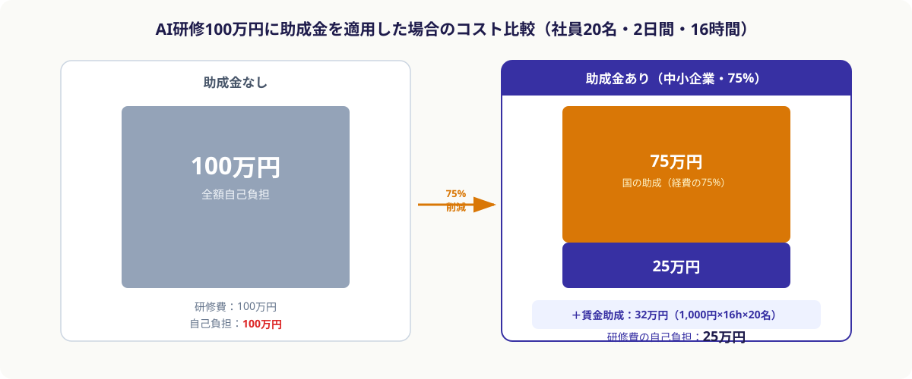
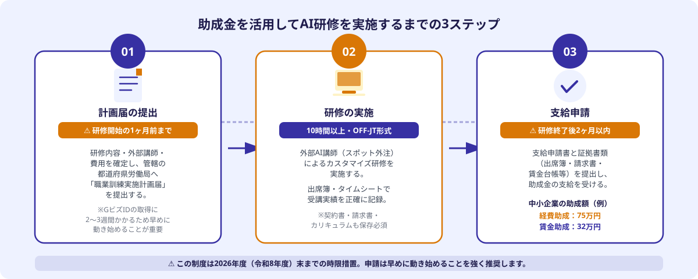

人材開発支援助成金（リスキリング支援コース）とは
「人材開発支援助成金（事業展開等リスキリング支援コース）」は、厚生労働省が提供する雇用関係の助成金制度です。DXや新規事業展開に向けて社員に新しいスキルを習得させる企業に対して、研修費用の一定割合と研修中の賃金の一部を国が補助します。
AI・生成AI・ChatGPT活用など、DXに関連するリスキリング目的の研修であれば、この制度の対象となります。ポイントは、社内研修だけでなく外部講師を招いた研修や外部研修機関への委託（OFF-JT）も対象になる点です。
- 助成対象：雇用保険の適用事業所が行う、DX・新規事業に向けたOFF-JT研修（10時間以上）
- 経費助成率：中小企業 75%／大企業 60%
- 賃金助成：研修中の賃金として 1人1時間あたり1,000円（令和7年4月改正）
- 年間上限：1事業所あたり年間1億円
- 制度期限：2026年度（令和8年度）末までの時限措置
この制度はもともと「新規事業を展開する企業向け」という位置づけでしたが、2026年2月の改正で要件が緩和され、「現在行っている事業の延長でDX・AI化を進めるための研修」にも適用できるようになりました。多くの中小企業がこの制度を使えるようになっています。
AI研修への助成金：具体的な金額シミュレーション
制度の数字だけ見ても実感が湧きにくいので、具体的なシミュレーションを見てみましょう。

ケース：社員20名に対して、外部AI講師を招いた対面型AI研修を2日間（計16時間）実施。研修費用は1人5万円、総額100万円。
①経費助成：100万円 × 75% ＝ 75万円の補助
→ 会社の実質負担は 25万円
②賃金助成：1,000円 × 16時間 × 20名 ＝ 32万円の補助
→ 研修中の人件費の一部を国が肩代わり（実際の給与より低額なため利益は出ないが、負担が軽減される）
結果として、定価100万円のAI研修が、研修費の自己負担25万円で済む計算になります。研修中の人件費の一部も補填されるため、全体の実質コストはさらに低くなります。
⚠️ 2026年度末が制度期限
この助成金は2026年度（令和8年度）末までの時限措置です。研修を2026年度内に実施・完了し、支給申請までを済ませる必要があります。制度延長は現時点で未定のため、活用を検討している場合は早めに動くことを強く推奨します。
助成金を活用してAI研修を実施する3ステップ
助成金を確実に受け取るためには、決められた順序と期限を守ることが最も重要です。順序を間違えると全額不支給になるリスクがあります。

STEP 1：研修内容と外部講師を決め、計画届を提出する（研修開始の1ヶ月前まで）
まず、実施する研修の内容（カリキュラム・時間数・対象社員・費用）と外部講師・研修機関を決定します。次に、研修開始の1ヶ月前までに管轄の都道府県労働局へ「職業訓練実施計画届」を提出します。この期限を1日でも過ぎると全額不支給になるため、逆算してスケジュールを組むことが重要です。
電子申請（jGrants）を使う場合は、GビズIDプライムの取得が必要で、発行に2〜3週間かかるため、早めに準備を始めてください。
STEP 2：研修を実施する（10時間以上・OFF-JT形式で）
計画届が受理されたら研修を実施します。助成対象となる要件は以下の通りです。
- 研修時間が合計10時間以上であること
- OFF-JT（通常業務とは切り離した職場外訓練）として実施されること
- AI・DXなど、新たなスキル習得を目的とする研修内容であること
- 受講者が雇用保険の被保険者であること
研修中は出席簿・タイムカードなどで受講実績を正確に記録しておくことが必要です。これが支給申請の証拠書類になります。
STEP 3：支給申請を行う（研修終了後2ヶ月以内）
研修が終了したら、2ヶ月以内に支給申請書と証拠書類を提出します。主な書類は以下の通りです。
- 支給申請書（所定の書式）
- 研修の実施記録（出席簿・タイムシート）
- 外部講師・研修機関との契約書・請求書・領収書
- カリキュラム・シラバス
- 賃金台帳（賃金助成の場合）
書類に不備があると審査が長引くため、研修実施前から必要書類をリスト化して準備しておくことを推奨します。社会保険労務士（社労士）に申請代行を依頼する企業も多く、初めての場合は専門家のサポートを活用する選択肢もあります。
外部AI講師をスポット外注で確保するメリット
助成金対象のAI研修を実施するには、OFF-JT形式で外部講師または外部研修機関を活用するのが最も確実です。なぜなら、社内のスタッフが教える場合は「通常業務とは切り離された訓練」と認定されにくく、助成要件を満たすハードルが上がるからです。
一方、外部講師をスポット外注で確保するアプローチには、大手研修会社への委託にはない以下のメリットがあります。
メリット①：カリキュラムを自社業務に完全カスタマイズできる
大手研修会社のパッケージ研修は内容が固定されており、「自社の営業部門向けにChatGPT活用のプロンプト設計を学びたい」「生産管理システムへのAI組み込みを理解させたい」といった自社固有のニーズに応えにくいことがあります。スポット外注の場合、エンジニアと直接やり取りして自社業務に合わせた研修設計ができます。
メリット②：コストを大幅に抑えられる
大手研修会社は管理費・広告宣伝費などの間接コストが価格に上乗せされています。スポット外注では講師に直接発注するため、同じ品質の研修をより低コストで実施できます。助成金で75%が補助される前提なら、自己負担をさらに削減できます。
メリット③：実務経験豊富なエンジニアが講師になる
ANKENに登録しているのは、生成AI・LLM活用・AI実装の実務経験を持つエンジニアです。「概念を教えるだけ」ではなく、「実際の業務でどう使うか」「自社システムにどう組み込むか」という実践的な視点で研修を設計・実施できます。
💡 助成金の対象になるかの確認ポイント
スポット外注でAI講師を確保して研修を実施する場合、講師との「委託契約書」と「カリキュラム・シラバス」を事前に用意できることが重要です。ANKENを通じてエンジニアに発注する際は、これらの書類作成にも対応できる形で依頼することをお勧めします。申請書類の詳細については、管轄の都道府県労働局または社労士にご確認ください。
申請でよくある失敗と注意点
助成金申請で最もよくある失敗は、「研修を先に始めてしまい、計画届の提出が間に合わなかった」というケースです。研修開始後に計画届を出しても、遡及申請は認められません。
その他の注意点を整理します。
注意点①：GビズIDの取得に時間がかかる
電子申請に必要なGビズIDプライムの発行には2〜3週間かかります。研修を計画してから「さあ申請しよう」と動き始めると、GビズIDの取得だけで計画届の提出期限を超えてしまうケースがあります。研修の2〜3ヶ月前には動き始めることをお勧めします。
注意点②：研修時間の記録を正確に残す
10時間以上の研修実施が要件ですが、出席簿や受講記録が不備だと全額不支給になります。研修ごとに開始時刻・終了時刻・出席者全員のサインを記録する習慣をつけてください。
注意点③：2026年度末の期限に注意
この制度は2026年度（令和8年度）末が期限です。研修の実施・完了・支給申請がすべて2026年度内に完結している必要があります。「2026年3月に研修を終えて4月以降に申請」では間に合わない可能性があるため、スケジュールを逆算して早めに動くことが重要です。
注意点④：雇用保険の適用事業所であること
助成金を受け取るためには、会社が雇用保険の適用事業所であることが前提条件です。雇用保険の加入状況を事前に確認してください。
まとめ・2026年度中に動くために
人材開発支援助成金（事業展開等リスキリング支援コース）は、中小企業が低コストでAI研修を実施できる、現時点で最も手厚い補助制度の一つです。
活用のポイントをまとめると、①研修開始1ヶ月前までに計画届を提出、②10時間以上のOFF-JT形式で研修を実施、③研修終了後2ヶ月以内に支給申請——この3点を守ることで、AI研修費の最大75%を補助してもらえます。
外部AI講師をスポット外注で確保すると、カリキュラムの自社カスタマイズと低コスト化を同時に実現できます。ANKENには生成AI・ChatGPT活用・AI実装の実務経験を持つエンジニアが登録しており、研修設計から当日の講師役まで一貫してご依頼いただけます。
2026年度末という期限が近づいています。「動いてみようか」と思ったタイミングが、最も早いタイミングです。まず「自社の研修ニーズに合うAIエンジニアがいるか確認したい」という段階から、無料でご相談いただけます。
生成AI・ChatGPT活用・AI実装の実務経験を持つエンジニアが、自社業務に合わせたカスタマイズ研修を設計・実施します。人材開発支援助成金（リスキリング支援コース）の対象となる形での研修設計もご相談いただけます。
👉 無料で相談する（AI研修の外部講師を探す）研修内容・費用・助成金活用のスケジュールなど、まずはご相談ください。